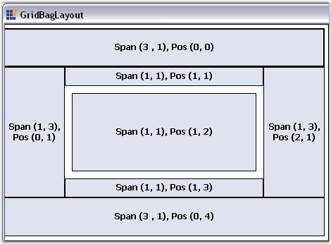

GridBagLayout is a Layout Manager which allows us to arrange the Child controls in a virtual grid of rows and columns. But, unlike the GridLayout, the size of the columns / rows can vary and the Child controls may span more than one cell.

Figure 690: Buttons Laid Out Using GridBagLayout
The GridBagLayout is the most configurable of all the Layout Managers, providing users various options to layout Child controls within the notion of a virtual grid of rows and columns. Deriving from the Layout Manager base, the GridBagLayout inherits all the functionality that the Layout Manager type exposes.
GridBagLayout is also used to layout the following controls:
· Navigation Buttons of the Wizard control.
· Buttons of the Calculator control.
A Sample which demonstrates the GridBagLayout is available in the below sample installation path.
..My Documents\Syncfusion\EssentialStudio\Version Number\Windows\Tools.Windows\Samples\2.0\Layout Manager Package\LayoutManagers
See Also
 Configuring Child Controls
Configuring Child Controls